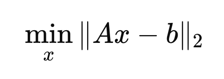
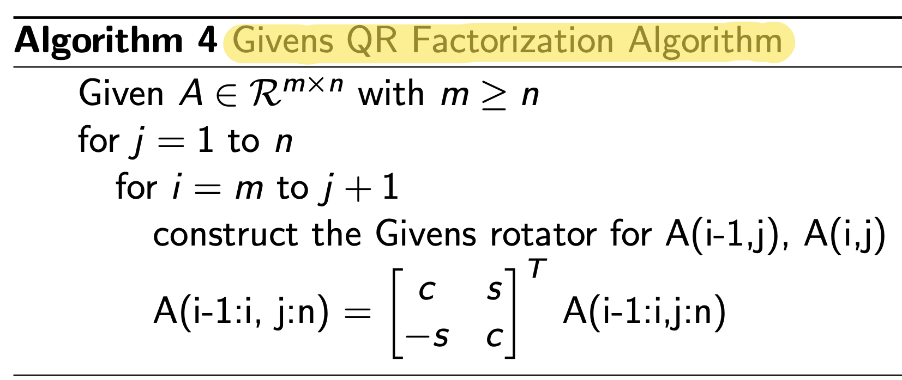
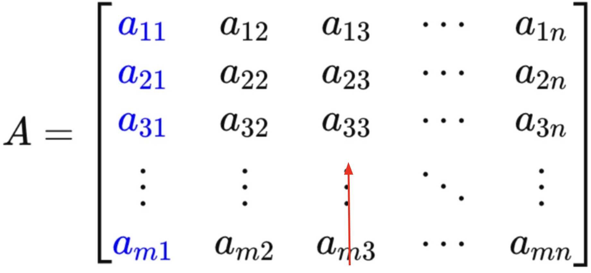
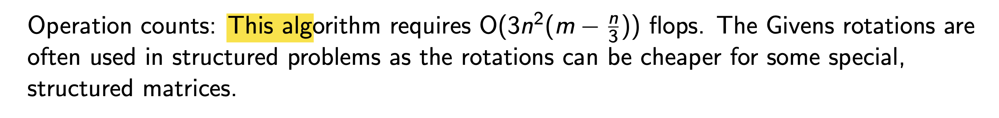

우리의 목표는????
(Ax = b) Matrix linear equation의 해 x 를 구하는것.

그 중 한가지 방법인 QR factorization은
A = QR 로 분해하여, 다음과같이 x를 쉽게 구할 수 있게 해준다.

따라서, 다음 질문은 QR factorization을
컴퓨터로 어떻게 효율적으로 할 수 있을까???
Answers are in the previous blog.
part1 - Grams Schemdit
part2 - HouseHolder
지난 시간에 2가지 방법들을 so far 다루었고.
이번에는 마지막 방법
Given QR method를 활용하여
QR분해를 실행해보자.
(비교적 간단하다)
큰틀은, HouseHolder와 동일하다. A(m x n) 에서 시작하여
Reflector를 이용하여
순차적으로 e1성분만 남겨서 최종적인 R matrix를 만드는 거이
Householder 의 메인 idea였다.
Given QR method의 아이디어는
Reflector -> Rotator로 전환하는것.
단순하다 e1성분만 남기는게 목표인데 그 목표를
회전으로 달성하는것.
아주 간단한 예시로 실현가능성을 살펴보자.

어떤 한개의 벡터가 있다고 가정하자.
우리는 이 벡터를 회전하여 e1성분만 남기는게 목표.
Rotator를 다음과 같이 정의해주자.


Rotator를 기존벡터에 곱하게 되면, 다음과 같이
e1성분만 남는 것을 알 수 가 있다.

자 이제 우리는 Rotator를 다음과 같이 제작하면,
특정 부분만 회전 시킬 수 있게 된다.

위 원리를 가지고 Give QR Factorization Algorithm을
Pseudo code로 작성하면 다음과 같다.

쉽게 말해서, A (m x n ) 행렬에서
첫번째 column은 row m부터 2번째 까지 전부 rotator를 활용하여 0 로 만들어준다.

3번째 column같은 경우는
row m 부터, 4까지 0으로 rotator를 활용하여 만들어준다.

위 과정을 쭉 반복하여 A를 right triangular Matrix로 전환해주는게 최종적인 목표.
기본적인 목표는 Householder와 동일하고,
A가 sparse Matrix(0가 원소로 많이 존재하는 행렬)인 경우,
연산이 Householder보다 빠르다는 장점이 있다.
(이미 요소가 0 이라면, 연산을 안하고 건너뛰는
if 문 알고리즘이 가능하기 때문)
